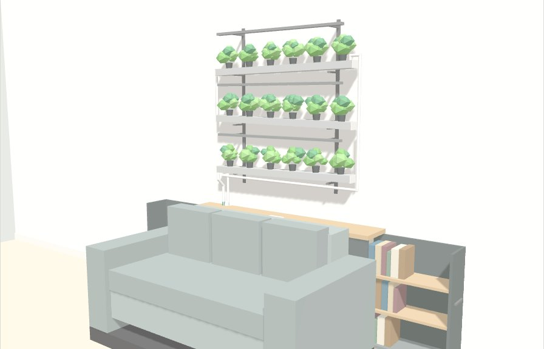

Parete idroponica con mobile dietro divano: scheda prodotto

Modello 3D interattivo, esploso e sezioni Apri il 3DVersione 3. Il mobile si semplifica: un vano fisso da 60 cm con anta sul fianco per il serbatoio, una colonna tecnica chiusa da 10 cm per tutta la corrente e una libreria che scorre di lato nel resto della lunghezza (90 cm nel mobile da 160). Niente più modulo acqua scorrevole né attacchi rapidi. Modello 3D interattivo con esploso, sezioni e percorso dell'acqua: apri il modello 3D.
Concept
Un sistema in due moduli, venduti insieme o separati: un mobile basso e cavo da mettere tra divano e muro, e sopra una parete di canaline idroponiche fatta di moduli da 60 cm. Serbatoio, pompa, alimentatori e cavi stanno nascosti nel mobile.
- Modulo A, mobile dietro divano. Piano con prese, un vano fisso da 60 cm per serbatoio e pompa (anta sul fianco), una colonna tecnica da 10 cm con alimentatore e prese, e una libreria che scorre di lato nel resto della lunghezza.
- Modulo B, parete idroponica modulare. Un modulo da 60 cm che si ripete (canalina, barra LED, staffa), binari a muro ogni 60 cm, larghezza e numero di file a scelta.
Il punto debole delle pareti idroponiche in casa è dove mettere serbatoio, pompa e cavi: di solito restano a vista sul pavimento. Qui li nasconde il mobile, che porta anche la corrente. Il valore sta nell'insieme: il mobile da solo è un oggetto comune, la parete senza mobile ha lo stesso difetto dei concorrenti.
Cliente tipo: chi vive in città, ama cucinare e avere piante, cura l'arredamento e non ha balcone o orto. Il divano contro il muro è la situazione più comune nei soggiorni, quindi il mercato potenziale è ampio.
Modulo A: mobile con vano serbatoio e libreria scorrevole
Sotto un piano unico ci sono due parti. Dal lato dei tubi un vano fisso da 60 cm, uguale per tutte le lunghezze: una scatola chiusa con un'anta sul fianco, senza meccanismi, dove il serbatoio standard si appoggia semplicemente sul fondo. Accanto, una colonna tecnica chiusa da 10 cm con ciabatta, alimentatore e timer: acqua e 230 V stanno in vani separati, e verso il serbatoio passa solo il cavo a 24 V della pompa. Il resto è una libreria che esce di lato su guide: 60, 90 o 120 cm per i mobili da 130, 160 e 190. Chi non vuole la parete usa il vano come contenitore, quindi il mobile si vende anche da solo.
Misure proposte (versione da 160 cm)
| Voce | Misura |
|---|---|
| Lunghezza | 130, 160 o 190 cm, sotto pareti da 1-3 moduli da 60 cm |
| Profondità | 26 cm: corpo da 22 cm, staccato 4 cm dal muro, sotto un piano che arriva fino al muro |
| Altezza piano | 72 o 82 cm, 2-5 cm sotto lo schienale del divano |
| Vano serbatoio | 60 cm, fisso, anta sul fianco, uguale per tutte le lunghezze |
| Libreria | 90 cm, esce di lato per tutta la sua larghezza |
| Colonna tecnica | 10 cm, fissa e chiusa, tra vano e libreria |
| Spazio libero ai lati | circa 95 cm dal lato della libreria per aprirla del tutto, 22 cm dal lato dell'anta |
Come è fatto
| Parte | Cosa fa |
|---|---|
| Piano fisso | Prese e USB-C sopra il vano, sagoma semicircolare sul retro per andata e ritorno dell'acqua |
| Base su piedini | Porta una coppia di guide a estrazione totale da 45 kg con blocco in chiusura, sotto la libreria |
| Fronte fisso lato divano | Davanti alla libreria, unito alla base: a libreria chiusa tiene dentro i libri anche se si sposta il mobile |
| Vano serbatoio | Scatola fissa con anta sul fianco e retro aperto: serbatoio standard appoggiato sul fondo, niente corrente a 230 V. Niente si muove |
| Colonna tecnica | Colonnina chiusa da 82 mm interni tra vano e libreria: ciabatta, alimentatore 24 V e timer. Si apre da una botola nel piano; schiena verso l'intercapedine con passacavo per la presa a muro e feritoie per il calore; verso il vano passa solo il cavo della pompa a 24 V, con passacavo e guarnizione |
| Corrente | Il corpo sta 4 cm staccato dal muro sotto un piano che arriva al muro: nell'intercapedine passano tubi e cavi, e c'è posto per una spina piatta ad angolo ovunque sia la presa. Un solo cavo va dalla presa a muro alla ciabatta nella colonna tecnica, che alimenta l'alimentatore 24 V della parete e le prese sul piano |
| Libreria | Fianchi, fondo e montante centrale in 18 mm, schiena in HDF da 3 mm, due campate da 42 cm con 2 ripiani da 16 mm ciascuna |
Libreria. Due campate da circa 42 × 67 × 19 cm, abbastanza per tascabili e la maggior parte dei libri. Con 2 ripiani per campata ci stanno circa 90 tascabili; con 1 ripiano per campata 50-60 libri di ogni formato. Limite: i libri si prendono facendo uscire la libreria, quindi è un archivio a scomparsa più che una libreria da esposizione.
Vano serbatoio. Serbatoio standard profondo fino a 20 cm (circa 50 × 20 × 30 cm, 30 L; va bene anche un contenitore da 20 L già in produzione) con coperchio forato e pompa 24 V, appoggiato sul fondo, non integrato nel mobile. Andata e ritorno scendono dalla sagoma e entrano liberi nel coperchio: niente raccordi da staccare. Si rabbocca aprendo l'anta, con una brocca, da un'apertura nel coperchio sul lato dell'anta. Per pulirlo si apre l'anta, si sfilano i tubi, si stacca il connettore della pompa e lo si fa scivolare fuori dal fianco, meglio dopo averlo svuotato in parte. Pieno pesa 25-30 kg: per spostare il mobile va svuotato.
Campione. Distinta di taglio, ferramenta e disegni quotati del mobile da 160 cm per il falegname: apri la distinta o scarica il PDF.
Modulo B: parete idroponica modulare
Tutta la parete è fatta di un modulo da 60 cm che si ripete: canalina con 3 piante, barra LED, staffa. Binari verticali fissati al muro ogni 60 cm reggono le staffe a qualsiasi altezza. Il cliente sceglie quanti moduli in larghezza e quante file, e può aggiungerne in seguito: una parete larga N moduli e alta F file usa N × F canaline e luci, (N − 1) × F giunti e N + 1 binari.
Componenti
| Componente | Specifica proposta |
|---|---|
| Canalina | Modulo unico da 60 cm, profilo 100×50 mm in PVC per alimenti o alluminio, 3 fori da 50 mm a passo 20 cm, un'estremità maschio e una femmina |
| Tappo di testa | Stesso pezzo per ingresso, uscita e chiusura, con foro da aprire |
| Luce | Barra LED da 60 cm, 24 V, 10-12 W, una per modulo, collegabile in serie |
| Staffa a L | Si aggancia al binario senza attrezzi, regge il giunto tra due canaline e il braccio della luce; pendenza dell'1-2% invertibile |
| Binario | Montante in alluminio a cremagliera, alto 120 o 150 cm, foratura a passo 32 mm, uno ogni 60 cm |
| Tubi | Andata 12-16 mm e ritorno 20-25 mm affiancati dal lato dove finisce l'ultima fila, tubi di caduta tra le file |
| Pannello posteriore (opzionale) | Lastra in HPL o PET dietro le canaline, protegge il muro da umidità e schizzi |
Il giro dell'acqua
- La pompa nel mobile spinge l'acqua su per il tubo di andata, che sale accanto al ritorno, fino all'unico ingresso: la testa della canalina più alta.
- Le canaline hanno pendenze alternate: l'acqua percorre la prima, cade con un raccordo nella seconda dal lato opposto, e così via fino all'ultima.
- Dalla fine dell'ultima canalina un tubo di caduta porta l'acqua nel mobile, attraverso la sagoma nel piano.
- Il ritorno entra nel serbatoio sotto il livello dell'acqua: niente gorgoglio, che di sera in salotto si sente.
Il percorso è disegnato nel prospetto del modello 3D.
Un solo ingresso in alto: l'acqua attraversa tutte le canaline a zig-zag e cade nel serbatoio. Niente collettore né rubinetti, quindi meno pezzi e meno punti di perdita. Con 3-4 canaline la differenza tra le prime e le ultime piante è trascurabile; oltre conviene un secondo ingresso a metà.
L'andata sale accanto al ritorno, dalla sagoma nel piano. Con un numero dispari di canaline passa sotto l'ultima e risale dall'altro lato fino all'ingresso in alto; con un numero pari sale diretta. La canalina più bassa sta almeno 30 cm sopra il piano.
Giunti tra le canaline. Giunto a sovrapposizione, senza guarnizioni né colla: l'estremità maschio, leggermente più stretta, entra per 3-4 cm nella femmina della canalina a valle, come le tegole di un tetto. L'acqua scorre sopra il giunto e non ha da dove uscire; nelle file con pendenza opposta si girano le canaline. La staffa sta sotto il giunto con un piccolo invito che raccoglie eventuali gocce. Da verificare sul prototipo: 48 ore di acqua con carta assorbente sotto i giunti.
Configurazioni di partenza
| Configurazione | Larghezza | Piante |
|---|---|---|
| 1 modulo × 2 file | 60 cm | 6 |
| 2 moduli × 3 file | 120 cm | 18 |
| 3 moduli × 3 file | 180 cm | 27 |
| 3 moduli × 4 file | 180 cm | 36 |
Una scelta di design importante: luci a spettro completo bianco caldo, non le classiche luci viola da coltivazione. In un soggiorno fanno la differenza tra un oggetto d'arredo e un impianto da serra.
Luci e controller
Tutto funziona a 24 V con un solo alimentatore nella colonna tecnica, separata dal vano dell'acqua: luci, pompa e controller.
| Parte | Scelta |
|---|---|
| Luci | Barre tubolari tipo T8 con LED bianchi e rossi, oppure striscia in profilo di alluminio con diffusore; 24 V DC, dimmerabili PWM, una barra da 60 cm e 10-12 W per modulo, bianco 3000-4000 K con rosso 660 nm, CRI oltre 90 |
| Orari luci | 14-16 ore al giorno, alba e tramonto graduali, più basse la sera come luce d'ambiente |
| Pompa | Sempre accesa o a cicli di 15 minuti; circa 100-130 kWh all'anno |
| Controller | Wi-Fi a 2-3 canali con app tipo Tuya, a marchio proprio per 5-12 €: programmi, dimmer, cicli pompa, galleggiante che spegne la pompa a secco, notifiche |
Primo fornitore visto: Foshan Sincere, barra T8 full spectrum, 1,63-1,81 € al pezzo, campione 4,51 €, ma a 230 V, lunga 0,6 m e con dati tecnici incoerenti. Il fornitore conferma di avere la versione 24 V DC; da chiedere: barra da 0,6 m, spettro e PPF misurati, test report CE e RoHS.
Sicurezza e certificazioni
Acqua e corrente nello stesso mobile sono il rischio numero uno, e vanno risolte nel progetto prima ancora che nelle certificazioni. La regola: tutto ciò che può bagnarsi funziona a bassa tensione (24 V), i 230 V restano solo nelle prese sul piano.
| Rischio | Scelta di progetto |
|---|---|
| Perdita d'acqua nel mobile | Vaschetta raccogli-gocce, sensore di perdite che spegne la pompa, vano elettrico sopra il livello dell'acqua e separato da una paratia |
| Contatto acqua e 230 V | Pompa e LED a 24 V da un alimentatore esterno già certificato CE; moduli presa da incasso già certificati |
| Peso sul muro | Istruzioni e tasselli diversi per muro pieno e cartongesso, carico massimo indicato per staffa |
| Ribaltamento del mobile | Serbatoio in basso, piedini larghi, fissaggio opzionale al muro |
| Umidità sul muro | Pannello posteriore opzionale e canaline chiuse sopra |
Obblighi per vendere in Europa (da far confermare a un laboratorio di prova)
- Marcatura CE per sicurezza elettrica (direttiva bassa tensione) e compatibilità elettromagnetica, con prove su un campione del prodotto finito.
- Restrizioni sulle sostanze pericolose nei componenti elettrici (RoHS).
- Regolamento europeo sulla sicurezza generale dei prodotti (GPSR): fascicolo tecnico, istruzioni, un responsabile nell'UE.
- Registrazione come produttore di apparecchiature elettriche (RAEE) e contributi per gli imballaggi in ogni Paese dove vendi.
- Materiali per canaline e serbatoio adatti al contatto con alimenti: non sempre obbligatorio per l'idroponica, ma è un argomento di vendita e toglie dubbi.
Usare componenti elettrici già certificati riduce molto costi e tempi delle prove, perché il laboratorio verifica solo l'assemblaggio.
Distinta base, costi e margini
Il set completo (mobile da 160 cm con libreria più parete da 2 moduli × 3 file) costa stimato 180-315 € arrivato in magazzino: mobile 90-145 €, kit parete 90-170 €. Sono stime di ordine di grandezza per 300-500 pezzi prodotti in Cina, da sostituire con i preventivi reali.
Mobile da 160 cm, senza idroponica
| Voce | Melaminico | Multistrato o rovere |
|---|---|---|
| Pannelli tagliati, bordati, forati (circa 4,5 m²) | 35-55 € | 80-130 € |
| 1 coppia di guide a estrazione totale con blocco, 2 cerniere per l'anta | 10-19 € | 10-19 € |
| Presa da incasso con USB-C, ciabatta, cavo | 10-18 € | 10-18 € |
| Ripiani libreria | 5-8 € | 5-8 € |
| Piedini, fermi, viteria | 5-8 € | 5-8 € |
| Imballo flat-pack | 5-8 € | 5-8 € |
| Costo di fabbrica | 70-116 € | 115-191 € |
| Trasporto, sdoganamento, magazzino | 20-30 € | 20-30 € |
| Arrivato in Italia | circa 90-145 € | circa 135-220 € |
Kit parete 2 moduli × 3 file (120 cm, 18 piante)
| Voce | Economica | Curata |
|---|---|---|
| 3 binari a muro in alluminio | 8 € | 12 € |
| 9 staffe a L con braccio luce | 9 € | 14 € |
| 6 canaline da 60 cm (PVC / alluminio) | 9 € | 30 € |
| 6 tappi, tubi di caduta, andata e ritorno | 6 € | 10 € |
| 18 vasetti e spugne | 2 € | 3 € |
| Serbatoio standard 30 L con coperchio forato | 4 € | 7 € |
| Pompa 24 V | 6 € | 10 € |
| Alimentatore 24 V da 100 W certificato | 10 € | 16 € |
| Controller a 2 canali | 4 € | 8 € |
| 6 barre LED da 60 cm | 12 € | 24 € |
| Cavi, connettori, clip | 4 € | 6 € |
| Nutrienti, istruzioni, imballo in scatole corte | 5 € | 8 € |
| Costo di fabbrica | circa 80 € | circa 150 € |
| Trasporto, sdoganamento, magazzino | 12 € | 20 € |
| Arrivato in Italia | circa 90 € | circa 170 € |
Ogni modulo in più (canalina, luce, staffa, tappo e vasetti) costa circa 6-12 € arrivato; un binario in più circa 3-4 €. Con un solo formato di canalina e di luce bastano due stampi e un test CE sulle luci.
Prezzi di vendita proposti (IVA inclusa)
| Prodotto | Prezzo |
|---|---|
| Mobile con libreria, 160 cm | 249-349 € |
| Kit parete 2 moduli × 3 file (con serbatoio, pompa, controller) | 349-449 € |
| Set completo | 599-749 € |
| Modulo aggiuntivo (canalina 60 cm, luce, staffa) | 29-39 € |
| Abbonamento semi e nutrienti | 15-20 € al mese |
Conto su un set venduto a 749 € (valori medi, IVA 22%)
| Voce | Importo |
|---|---|
| Prezzo senza IVA | 614 € |
| Costo arrivato in magazzino | −255 € |
| Spedizione al cliente, due colli | −50 € |
| Commissioni di pagamento | −26 € |
| Margine prima del marketing | 283 € (46%) |
| Pubblicità per ottenere la vendita (ipotesi) | −150 € |
| Margine dopo il marketing | 133 € (22%) |
Costi una tantum prima di vendere
| Voce | Stima |
|---|---|
| Prototipi e campioni | 3.000-5.000 € |
| Stampi e matrici per profili e staffe | 1.000-3.000 € |
| Prove di laboratorio e certificazioni | 3.000-6.000 € |
| Design, render, foto e video | 4.500-9.000 € |
| Totale | circa 12.000-23.000 € |
Il punto critico del budget: un primo ordine di 300 set costerebbe circa 55.000-100.000 € di merce, sopra i 50.000 disponibili. Le vie d'uscita sono tre: preordini con il crowdfunding, un primo lotto da 100-150 set, oppure partire con il solo mobile con libreria (300 pezzi, circa 30.000-45.000 €) e aggiungere il kit dopo.
Concorrenza e posizionamento
Nessuno vende oggi un sistema che unisce mobile dietro divano e parete idroponica: i concorrenti fanno o l'uno o l'altro. La parete idroponica ha pochi rivali da muro tra 150 e 850 €; il mobile con prese, da solo, è invece un oggetto comune ed economico.
| Prodotto | Tipo | Prezzo |
|---|---|---|
| Click & Grow Wall Farm | Parete idroponica | 2.999,95 € |
| Click & Grow Smart Garden 27 | Mobile idroponico | 999,95 € |
| Click & Grow 25 | Mobile idroponico | 849,95 € |
| Gardyn Home Kit 4.0 | Torre, 30 piante, USA | 899 $ |
| Lettuce Grow Farmstand | Torre, 24 piante, USA | 548 $ |
| Torri generiche | Torre, 36 piante, senza luce | circa 158 $ |
| Consolle stretta con prese, 100 cm | Mobile dietro divano | 59,99 € |
| Consolle con multipresa | Mobile dietro divano | 79 € |
Cosa ne ricavo
- Il set a 599-749 € si colloca molto sotto Click & Grow, con il formato da parete che loro vendono a 3.000 €.
- Il mobile con libreria a 249-349 € costa più delle consolle da 60-80 €: deve farsi pagare per la libreria scorrevole e il vano nascosto nello spazio dietro il divano, non per le prese.
- I punti su cui distinguersi: pompa silenziosa, luci bianco caldo, nessun impianto a vista, modularità vera (un solo modulo da 60 cm, si aggiunge nel tempo).
Prossimi 30 giorni
L'obiettivo del primo mese è sapere, spendendo meno di 3.000 €, se la gente vuole questo prodotto e quanto costa davvero produrlo.
Settimana 1: misure e costi veri
- Misurare altezza e spessore degli schienali di 10-15 divani in 2-3 negozi, per fissare l'altezza del mobile
- Documentare la parete prototipo: litri, consumi, rumore, problemi incontrati, e trasformarla nella specifica v1
- Chiedere preventivi su Alibaba e 1688 a 3 fornitori per voce: canaline, binari a cremagliera, staffe, barre LED bianco caldo, pompa 24 V, serbatoio, mobile smontabile
Settimana 2: farlo vedere
- Render 3D di tre scene (soggiorno di giorno, di sera con le luci, mobile aperto) da un freelance, budget 500-1.500 €
- Nome provvisorio e pagina web con prezzo per i primi sostenitori intorno ai 499-599 € e raccolta email
Settimane 3-4: misurare l'interesse
- Pubblicità su Instagram e Facebook in Italia e Germania, 1.000 €, 2-3 versioni delle immagini
- Telefonare a 10 persone che hanno lasciato la mail: cosa le ha colpite, quanto pagherebbero, cosa manca
Come decidere alla fine del mese (soglie indicative): almeno 300-500 contatti a meno di 3 € l'uno significa prototipo e campagna Kickstarter; molto meno significa cambiare formato.
Domande aperte
- Piano a 72 o 82 cm: si decide dopo le misure dei divani.
- Mobile prodotto in Cina o in Europa dell'Est: in Europa costa di più ma spedire mobili ingombranti dalla Cina pesa sul costo.
- Canaline in alluminio (più belle, più care) o in PVC.
- App e controllo da telefono al lancio: consiglio di no, si aggiungono in una seconda versione.